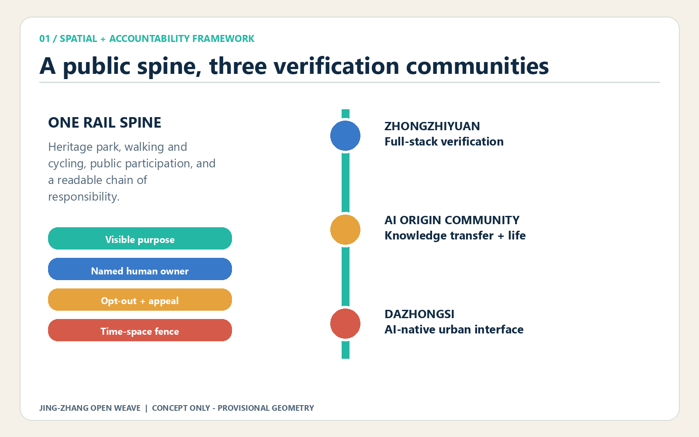
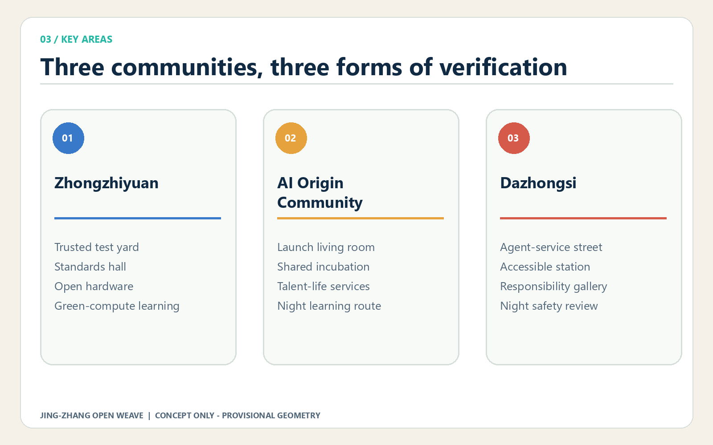
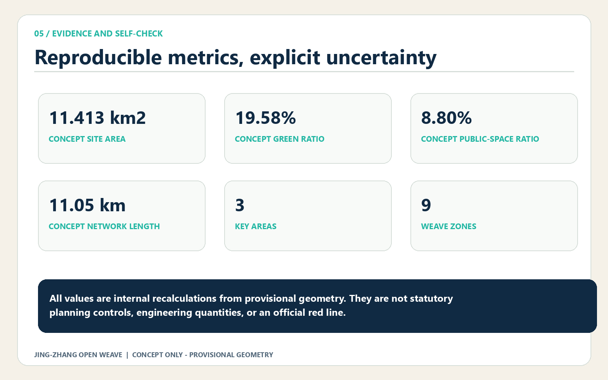

Centennial Jing-Zhang AI Innovation Belt Open Call for Urban Design
A verifiable public prototyping belt for the AI city.
heritage + slow mobility + participation
technology + transfer + urban services
complete concept coverage
permit + review + stop rule


